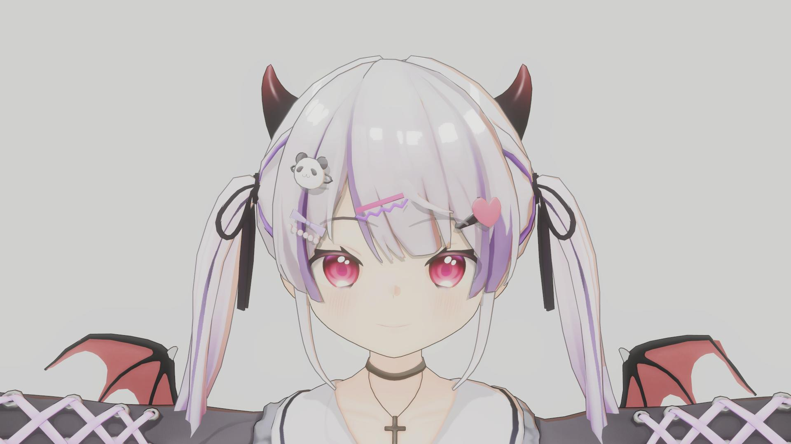
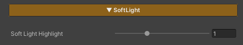

This feature applies a Soft Light color adjustment (blend mode / tone curve) to the character’s color after lighting has been calculated (Final Lit Color).
It enhances contrast and smoothness for a more subtle, softer look, and is applied only to the character’s material, without affecting the scene’s post-processing.